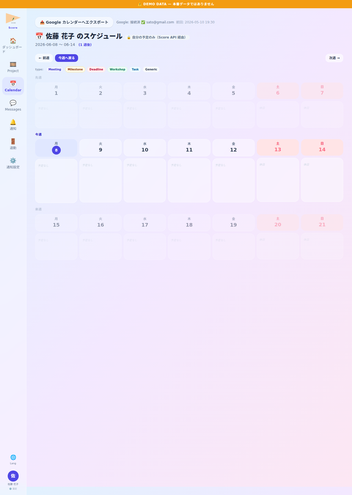

📌 このロールが Score でできること
- ▸全プロジェクトの進捗・納品スケジュール 集約把握
- ▸全 SHOT 関係者 thread に自動 participants として含まれる (連絡漏れ防止)
- ▸納品チェックリストで全 SHOT が Approved 済か確認してから提出
- ▸カレンダー横断ビューでリソース競合・日程過密を早期発見
- ▸通知優先度・配信経路 (Push/SSE/badge) の使い分けで通知過多防止
💡 1 日の流れ — 架空 project「桜咲く街」(TV アニメ・第 3 話 制作中) を例に
PM 太郎は「桜咲く街」第 3 話制作中。朝のルーティン提出 → ダッシュボードで全プロジェクト進捗把握 → ボトルネック SHOT 特定 → 納品予定確認 → 各 thread で Director/Lead 連絡 → 退勤報告 まで Score 1 つで完結。
ログイン・朝のルーティン

📸 画面例: PM 太郎は出勤と同時にログイン → 体調🙂選択 → 「本日のタスク」確認 → 提出
💬 例えば
例えば 9:43 にログインすると Dashboard 右上に「🕘 出勤 09:43」 chip が表示される。 体調が🤒(風邪) なら 後で 振り返り時に稼働分析の参考となる。
PM ダッシュボード
📸 画面例: 桜咲く街 第 3 話 進捗 65% (警告) → クリックで詳細遷移
💬 例えば
例えば「桜咲く街 第 3 話」が進捗 65% で納品まで残 25 日なら警告色で表示。 並行する「夏祭り CM 案件」 は進捗 95% で安心、と一覧で即判断できる。
プロジェクト一覧

📸 画面例: 「桜咲く街」 行 click → 第 3 話制作画面へ
💬 例えば
例えば 4 プロジェクトを抱えている時、 「納品日 昇順」 sort をかけると 桜咲く街 第 2 話 (残 30 日) が先頭に来る。 → 最優先 PJ を即特定。
プロジェクト詳細・SHOT 状況
📸 画面例: 桜咲く街 sq01 c05 が Retake 2 回連続 → 加藤 Lead に Lighting 確認依頼
💬 例えば
例えば sq01 c05 で Retake が 2 回連続発生していると、 PM 太郎は SHOT 詳細を確認 → 加藤 Lead に「Lighting 観点で技術的問題ないか」相談 → 山田 Director と方針すり合わせ会議を設定。
納品管理
📸 画面例: 桜咲く街 第 2 話 全 24 SHOT Approved → 納品提出 → クライアント自動通知
💬 例えば
例えば 第 2 話 全 24 SHOT のうち sq03 c08 のみ Reviewing 中の場合、 「納品完了」 button は灰色で押せない。 sq03 c08 が Approved になった瞬間 button が活性化する仕組み。
カレンダー・スケジュール

📸 画面例: 桜咲く街 第 4 話 試写日 (6/15) と 別プロジェクト納品日 (6/16) が近接 → リソース調整
💬 例えば
例えば 6 月 15 日に 桜咲く街 第 4 話 試写 + 6 月 16 日に CM 案件納品が重なる場合、 月ビューで赤色イベントが連続するのが一目瞭然。 → 1 週間前に Lead/User の稼働を再配分。
メッセージ・SHOT 関係者 thread

📸 画面例: 山田 Director → 佐藤 User の sq01 c05 QC thread に PM 太郎も自動参加
💬 例えば
例えば 佐藤 User が sq01 c05 を QC 提出すると、 PM 太郎は何もしなくても自動的に thread participants に追加され、 Director と User のやり取りを 全部 横で見られる。 → 後から「あの SHOT どうなった?」 と聞き直す必要なし。
退勤報告

📸 画面例: PM 太郎「明日朝一で桜咲く街 sq02 全 SHOT QC 状況確認予定」 と記入し提出
💬 例えば
例えば 木曜退勤時に「金曜朝一で sq02 全 SHOT QC 状況確認・午後 14:00 に山田 Director と次話の打合せ」 と記入。 翌朝 5am 以降ログイン時、 ルーティン画面の「明日の予定」 欄にそのまま反映される。
通知設定

📸 画面例: 桜咲く街 関連通知は Push ON・他プロジェクトは SSE のみに絞る
💬 例えば
例えば 1 日に 50 件以上 SHOT thread 投稿が届く PM の場合、 全 Push にすると スマホが鳴り続ける。 → qc_request カテゴリのみ Push、 通常投稿は SSE (画面開いてる時だけ) に設定すると 集中力維持できる。